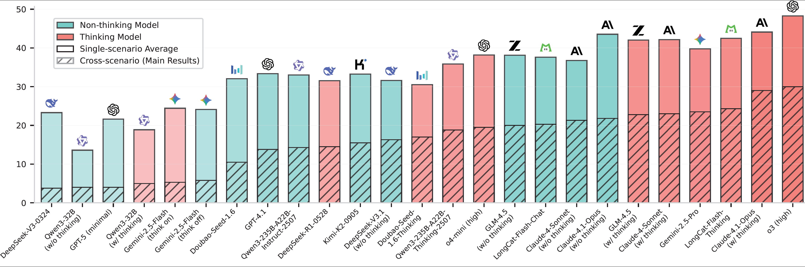
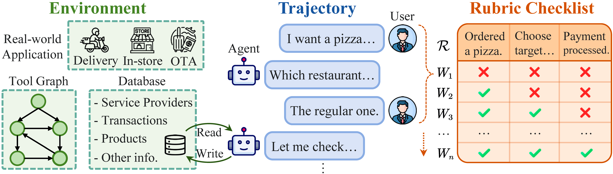

Abstract
As LLM-based agents are increasingly deployed in real-life scenarios, existing benchmarks fail to capture their inherent complexity of handling extensive information, leveraging diverse resources, and managing dynamic user interactions. To address this gap, we introduce VitaBench, a challenging benchmark that evaluates agents on versatile interactive tasks grounded in real-world settings. Drawing from daily applications in food delivery, in-store consumption, and online travel services, VitaBench presents agents with the most complex life-serving simulation environment to date, comprising 66 tools. Through a framework that eliminates domain-specific policies, we enable flexible composition of these scenarios and tools, yielding 100 cross-scenario tasks (main results) and 300 single scenario tasks. Each task is derived from multiple real user requests and requires agents to reason across temporal and spatial dimensions, utilize complex tool sets, proactively clarify ambiguous instructions, and track shifting user intent throughout multi-turn conversations. Moreover, we propose a rubric-based sliding window evaluator, enabling robust assessment of diverse solution pathways in complex environments and stochastic interactions. Our comprehensive evaluation reveals that even the most advanced models achieve only 30% success rate on cross-scenario tasks, and less than 50% success rate on others. Overall, we believe VitaBench will serve as a valuable resource for advancing the development of AI agents in practical real-world applications.

Overview
We conduct 4 motivating experiments that illustrate the benefits of learning within Model Trees. In each experiment, we train a linear classifier to predict the classes a ViT model was fine-tuned on. First, we show that learning within Model Trees is significantly simpler (a) by comparing a metanetwork trained on models from the same tree \(T\) with one trained on models from different trees \(F\). Next, we demonstrate positive transfer within the same tree (b) by showing that adding more models from the same tree improves the performance. Surprisingly, we observe negative transfer between Model Trees (c), where adding samples from other trees degrades performance on a single tree. Finally, we find that expert learning is preferable when learning from multiple trees (d), as a single shared metanetwork performs worse than an expert metanetwork per tree (MoE).
Method
We show the 10 largest Model Trees on Hugging Face. Our insight is that learning an expert for each tree greatly simplifies weight-space learning. This is a practical setting as a few large Model Trees dominate the landscape.
Leaderboard
| Models | Cross-Scenarios | Delivery | In-store | OTA | ||||||||
|---|---|---|---|---|---|---|---|---|---|---|---|---|
| Avg@4 | Pass@4 | Pass^4 | Avg@4 | Pass@4 | Pass^4 | Avg@4 | Pass@4 | Pass^4 | Avg@4 | Pass@4 | Pass^4 | |
| Non-thinking Models | ||||||||||||
| DeepSeek-V3-0324 | 3.8 | 12.0 | 0.0 | 25.3 | 53.0 | 5.0 | 34.3 | 71.0 | 5.0 | 10.3 | 26.0 | 1.0 |
| Qwen3-32B (w/o thinking) | 4.0 | 12.0 | 0.0 | 16.5 | 37.0 | 3.0 | 21.3 | 47.0 | 2.0 | 3.0 | 11.0 | 0.0 |
| GPT-5 (minimal) | 4.0 | 9.0 | 0.0 | 30.0 | 64.0 | 6.0 | 27.0 | 60.0 | 2.0 | 7.8 | 22.0 | 0.0 |
| Gemini-2.5-Flash (think off) | 5.8 | 17.0 | 1.0 | 31.0 | 65.0 | 6.0 | 22.8 | 46.0 | 3.0 | 18.5 | 44.0 | 1.0 |
| Doubao-Seed-1.6 | 10.5 | 29.0 | 0.0 | 37.8 | 65.0 | 12.0 | 39.5 | 73.0 | 9.0 | 18.8 | 39.0 | 3.0 |
| GPT-4.1 | 13.8 | 35.0 | 0.0 | 37.8 | 67.0 | 11.0 | 42.5 | 71.0 | 17.0 | 19.8 | 42.0 | 1.0 |
| Qwen3-235B-A22B-Instruct-2507 | 14.3 | 38.0 | 0.0 | 34.3 | 66.0 | 6.0 | 44.8 | 87.0 | 13.0 | 20.0 | 45.0 | 1.0 |
| Kimi-K2-0905 | 15.5 | 39.0 | 2.0 | 35.3 | 68.0 | 9.0 | 42.5 | 78.0 | 10.0 | 22.0 | 46.0 | 4.0 |
| DeepSeek-V3.1 (w/o thinking) | 16.3 | 40.0 | 1.0 | 34.0 | 67.0 | 6.0 | 42.5 | 76.0 | 7.0 | 18.3 | 47.0 | 1.0 |
| GLM-4.5 (w/o thinking) | 20.0 | 47.0 | 1.0 | 45.8 | 72.0 | 20.0 | 48.3 | 82.0 | 13.0 | 20.3 | 45.0 | 2.0 |
| LongCat-Flash-Chat | 20.3 | 45.0 | 2.0 | 39.5 | 71.0 | 15.0 | 50.5 | 84.0 | 15.0 | 22.8 | 49.0 | 2.0 |
| Claude-4-Sonnet (w/o thinking) | 21.3 | 49.0 | 4.0 | 39.0 | 69.0 | 17.0 | 46.3 | 78.0 | 10.0 | 25.0 | 49.0 | 7.0 |
| Claude-4.1-Opus (w/o thinking) | 21.8 | 47.0 | 3.0 | 46.0 | 78.0 | 13.0 | 53.8 | 85.0 | 21.0 | 30.8 | 60.0 | 9.0 |
| Thinking Models | ||||||||||||
| Qwen3-32B (w/ thinking) | 5.0 | 24.0 | 0.0 | 22.8 | 53.0 | 4.0 | 26.5 | 60.0 | 3.0 | 7.3 | 18.0 | 1.0 |
| Gemini-2.5-Flash (think on) | 5.3 | 14.0 | 0.0 | 32.0 | 62.0 | 9.0 | 23.0 | 57.0 | 3.0 | 18.3 | 39.0 | 1.0 |
| DeepSeek-R1-0528 | 14.5 | 39.0 | 0.0 | 40.3 | 72.0 | 11.0 | 41.3 | 79.0 | 7.0 | 13.0 | 32.0 | 2.0 |
| Doubao-Seed-1.6-Thinking | 17.0 | 42.0 | 1.0 | 30.3 | 59.0 | 10.0 | 43.3 | 78.0 | 10.0 | 18.0 | 45.0 | 2.0 |
| Qwen3-235B-A22B-Thinking-2507 | 18.8 | 45.0 | 2.0 | 44.0 | 78.0 | 9.0 | 46.0 | 80.0 | 9.0 | 17.5 | 41.0 | 2.0 |
| o4-mini (high) | 19.5 | 49.0 | 1.0 | 44.5 | 80.0 | 15.0 | 46.5 | 81.0 | 15.0 | 23.5 | 50.0 | 5.0 |
| GLM-4.5 (w/ thinking) | 22.8 | 48.0 | 2.0 | 44.5 | 77.0 | 14.0 | 52.8 | 80.0 | 22.0 | 28.8 | 55.0 | 7.0 |
| Claude-4-Sonnet (w/ thinking) | 23.0 | 51.0 | 6.0 | 46.0 | 78.0 | 15.0 | 51.5 | 80.0 | 21.0 | 29.0 | 55.0 | 9.0 |
| Gemini-2.5-Pro | 23.5 | 53.0 | 5.0 | 49.0 | 81.0 | 16.0 | 43.8 | 78.0 | 12.0 | 26.5 | 54.0 | 6.0 |
| LongCat-Flash-Thinking | 24.3 | 54.0 | 3.0 | 42.3 | 71.0 | 13.0 | 56.8 | 85.0 | 25.0 | 28.3 | 59.0 | 6.0 |
| Claude-4.1-Opus (w/ thinking) | 29.0 | 56.0 | 6.0 | 47.5 | 80.0 | 17.0 | 52.5 | 78.0 | 20.0 | 32.3 | 57.0 | 9.0 |
| o3 (high) | 30.0 | 61.0 | 6.0 | 53.5 | 83.0 | 24.0 | 53.5 | 86.0 | 19.0 | 37.8 | 66.0 | 10.0 |
BibTeX
@article{TODO}
}